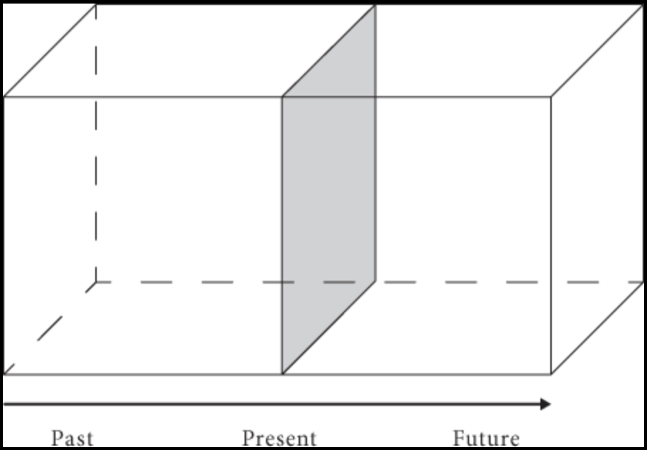

2 Tense and Ontology: McTaggart on Time
In order to understand two approaches to the metaphysics of time, we must come to terms with an argument for the unreality of time due to John McTaggart in (McTaggart 1908). He contrasts two sorts of distinctions between what he calls positions in time or moments:
If we distinguish one position \(m\) from another position \(m'\) on the grounds that \(m\) is earlier or later than \(m'\), then the distinction between them is permanent and not subject to change.
If we distinguish one position \(m\) from another position \(m'\) on the grounds that \(m\) is past and \(m'\) is present, then the distinction is merely temporary as both will eventually be past.
Because some distinctions are permanent and others are not, he distinguished two descriptions of a series of moments or events by appeal to each type of distinction.
This is a dynamic series in which moments of time move from one determination to another. Moments or events are future, then present, and then past.
\[ \begin{array}{ccccccc} \cdots & m & & m' & & m'' & \dots\\ \cdots & present & & \textbf{near future} & & future & \cdots \\ \end{array} \]
\[ \begin{array}{ccccccc} \cdots & m & & m' & & m'' & \dots\\ \cdots & past & & \textbf{present} & & future & \cdots \\ \end{array} \]
\[ \begin{array}{ccccccc} \cdots & m & & m' & & m'' & \dots\\ \cdots & past & & \textbf{near past} & & present & \cdots \\ \end{array} \]
Moments of time are occupied by events, which inherit some of these properties from the moments they occupy, e.g., a lecture may be future in virtue of the fact that it occupies a future moment of time.
This is how we generally conceive of time.
This is a static series in which moments of time or events stand in permanent relations to one another. Moments or events are earlier than or later than one another.
\[ \begin{array}{lllll} \cdots & m & m' & m'' & \dots\\ \end{array} \]
\(m\) is earlier than \(m'\)
\(m\) is earlier than \(m''\)
\(m'\) is earlier than \(m''\)
\(m'\) is later than \(m\)
\(m''\) is later than \(m'\)
\(m''\) is later than \(m\)
Unlike the A-series, there is no change involved in the B-series, since there is no change in what B-theoretic relations one moment bears to another.
If there is time, then there is a series of moments, and we may well ask whether they form an \(A\)-series or a \(B\)-series.
2.1 Is Time Real?
John McTaggart proceeded to argue for the unreality of time in (McTaggart 1908). The argument proceeds from two main premises:
M1. If time is real, then there is an A-series.
M2. There is no A-series.
C. Therefore, time is not real.
In support of the first premise, M1, McTaggart argued that there is no time without change:
- If time is real, then there is change.
- If there is change, then there is an A-series.
- Therefore, if time is real, then there is an A-series.
A world without change would, for McTaggart, be a timeless world. But what could change consist in in a series of moments of time? According to McTaggart change can only consist in the transition from future to near future, to present, to near past, to past. Nothing else could account for the existence of change in a series of moments.
Consider an event such as the final game of the World Series. It is true that the event features different qualities at different moments of time: the scoreline may be different from one inning to another. But that is not sufficient for real change: it is permanently the case that the scoreline remained 0-0 at the end of the first inning, 1-0 at the end of the second inning, etc. On the one hand, the first inning eventually changed from future to near future to present to near past to past, etc. Change requires a variation in A-properties like past, present, and future.
Bertrand Russell, and others, found the second premise doubtful:
If my poker, for example, is hot on a particular Monday, and never before or since, the event of the poker being hot does not change. But the poker changes, because there is a time when this event is happening to it, and a time when it is not happening to it.
As should be plain by now, McTaggart denies that the mere fact that the poker is hot on a Monday but not hot on a different day is sufficient for change. Real change, for McTaggart, requires a moment to change with respect to its A-properties.
Could we make do with a B-series of moments? For McTaggart, the B-series depends on the existence of an A-series. For B-relations, as McTaggart understands them, depend on the existence of A-properties: for a moment to be earlier than another is for one to eventually be present when the other is future or to be past while the other is present.
The B series, on the other hand, is not ultimate. For given a C series of permanent relations of terms which is not itself temporal, and therefore is not a B-series and given the further fact that the terms of this C series also form an A series, and it results that the terms of the C series become a B series, those which are placed first, in the direction from past to future, being earlier than those whose places are further in the direction of the future.
We could, as McTaggart explains, conceive of a series of moments related to each other by perfectly permanent relations, which McTaggart calls the C-series, but they have no temporal order according to McTaggart.
In support of the second premise, M2, McTaggart reasoned:
- If there is an A-series, then moments are future, present, and past.
- No moment is future, present, and past.
- Therefore, there is no A-series.
In support of the first premise, McTaggart argues that for a moment to change from future to present to past, it must exemplify all three qualities: past, present, and future.
If M is past, it has been present and future. If it is future, it will be present and past. If it is future, then it has been future and it will be past. Thus all three characteristics belong to each event.
Yet:
Past, present, and future are incompatible determinations. Every event must be one or the other, but no event can be more than one. This is essential to the meaning of the terms.
But that means that no moment of time can coherently be all three: past, present, and future.
2.2 Two Responses to McTaggart’s Argument: The A-Theory and the B-Theory of Time
The master argument is valid, which means that we must either reject at least one premise or else embrace the unreality of time. Two approaches to the metaphysics of time arise in line with the rejection of each premise of the argument. A-theorists tend to reject M2, whereas B-theorists reject M1.
2.2.1 The A-Theory of Time
The A-theoretic picture of time maintains that there is an A-series of moments of time, which are subject to change from future to present to past. That means that they reject M2. To that purpose, they must respond to the argument McTaggart offers in support of that premise.
McTaggart is aware that the premise that moments are future, present, and past may seem doubtful when we switch to a tensed formulation of the relevant predications.
If \(m\) is now present, then:
| \(m\) | is future | has been future |
| \(m\) | is present | is now present |
| \(m\) | is past | will be past |
If \(m\) is now future, then:
| \(m\) | is future | is now future |
| \(m\) | is present | will be present |
| \(m\) | is past | will be past |
If \(m\) is now past, then:
| \(m\) | is future | has been future |
| \(m\) | is present | has been present |
| \(m\) | is past | is now past |
McTaggart replies that this is a distinction without a difference:
But this explanation involves a vicious circle. For it assumes the existence of time in order to account for the way in which moments are past, present and future. Time then must be pre-supposed to account for the A series. But we have already seen that the A series has to be assumed in order to account for time. Accordingly the A series has to be presupposed in order to account for the A series. And this is clearly a vicious circle.
For McTaggart:
‘has been such-and-such’ just is ‘is such-and-such at some past moment’.
‘is now such-and-such’ just is ‘is such-and-such at a present moment’.
‘will be such-and-such’ is just ‘is such-and-such at some future moment’.
, since there is a simple paraphrase for each tensed predication.
| \(m\) | has been future | is future at a past moment \(p\) |
| \(m\) | is now present | is present at a present moment \(q\) |
| \(m\) | will be past | is past at a future moment \(r\) |
The issue now is that to the extent to which the relevant moments of time are part of an A-series, they each are future present and past, which is, for McTaggart, incoherent.
An Infinite Regress?
We may insist that talk of a past moment is talk of a moment that has been present, talk of a present moment is talk of a moment that is now present, and talk of a future moment is talk of a moment that will be present.
| \(m\) | is future at a past moment | is future at a moment that has been present |
| \(m\) | is present at a present moment | is present at a moment that is now present |
| \(m\) | is past at a future moment | is past at a moment that will be present |
McTaggart’s response is to insist that talk of a moment that has been present is talk of a moment that is present at some past time in which case we have just postponed the problem. In fact, we could iterate the process ad infinitum, which, for McTaggart, is by itself a reason to reject the existence of an A-series in the first place.
Taking Tense Seriously
In response to McTaggart, C. D. Broad draws a helpful distinction in (Broad 1934) between two styles of predication:
| Tenseless Predication | Tensed Predication |
|---|---|
| The number two is even | Two is now my favorite number |
| Two has been my favorite number | |
| Two will be my favorite number | |
| The lecture is new | The lecture is now underway |
| The lecture has been underway | |
| The lecture will be underway |
One important difference between the two uses of the expression ‘is’ is that the statements in which it occurs as a tensed copula are often only temporarily true, whereas the statements in which it occurs as a tenseless predicate are sometimes permanently true. To disambiguate, we may use capital letters when we mean the predication to be tenseless.
Now, McTaggart’s infinite regress arises only when one insists on an analysis of tense in terms of tenseless predication. In McTaggart’s case the proposed analysis takes the form:
| Tensed Predication | Tenseless Predication |
|---|---|
| \(m\) has been \(F\) | \(m\) IS \(F\) at a moment \(p\), which IS past. |
| \(m\) is now \(F\) | \(m\) IS \(F\) at a moment \(q\), which IS present. |
| \(m\) will be \(F\) | \(m\) IS \(F\) at a moment \(r\), which IS future. |
McTaggart’s Reduction of Tense
Broad agrees that given the proposed analysis, we are led into an infinite regress. But we should simply reject McTaggart’s invitation to paraphrase the tense in the way he suggests. The proper conclusion from McTaggart’s argument is that tensed predication is irreducible and cannot be analyzed in terms of tenseless predication.
\(A\)-theorists of time tend to take tense seriously much like C. D. Broad recommended in response to McTaggart. They take the B-series to leave something out, namely, which time is now, which times are past, and which times are future. As (Zimmerman 2005) puts the point in p. 431:
The essence of the A-theory is the objectivity of the distinction between past, present, and future. What is presently true is true, simpliciter, not merely true relative to a time or utterance or situation.
2.2.2 The B-Theory of Time
The B-Theory of time makes do without the A-series or the distinction between past, present, and future. Here is J.J. C. Smart in (Smart 1963), p. 132:
One can easily get the idea that the notions of past, present, and future apply objectively to the universe. In contrast, I shall argue that the concepts of past, present, and future have significance only relative to human thought and utterance and do not apply to the universe as such. They contain a hidden anthropocentricity. So also do tenses. On the other hand, the concepts of ‘earlier’, ‘simultaneous’, and ‘later’ are impeccably non-anthropocentric. I shall argue for a view of the world as a four-dimensional continuum of space-time entities, such that out of relation to particular human beings or other language users there is no distinction of ‘past’, ‘present’, and ‘future’. Moreover, the notion of the flow of time is the result of similar confusions. Our notion of time as flowing, the transitory aspect of time…, is an illusion which precents us seeing the world as it really is.
The B-theorist pictures time as a fourth dimension perfectly akin to the usual three spatial dimensions: length, width, and height. For the sake of simplicity, we will draw spacetime diagrams that represent time as another dimension T alongside two spatial dimensions. The diagram below taken from (Wasserman 2017) represents the spatiotemporal trace left by each a two-dimensional object at the present time:

The B-Theory simply rejects M1 on the grounds that a series of events connected by a series of B-relations is sufficient for the existence of time. Unlike McTaggart, they claim that events stand in B-relations even if there is no genuine difference between future, past, and present.
For them, tense is derivative on B-relations. Take the case of tensed predications such as ‘Two is now my favorite number’. They take the word ‘now’ to act as an indexical for the moment of utterance. That is, the word ‘now’ picks out different times for different utterances of the sentence ‘I’m now in LA’ at different times. But that is one reason why the A-theorist will reject the B-theorist attempt to translate ‘m is past’ in terms of ‘earlier than’ and ‘now’:
| \(m\) is present | \(m\) is now |
| \(m\) is simultaneous with the time of utterance | |
| \(m\) is past | \(m\) is earlier than now |
| \(m\) is earlier than the time of utterance | |
| \(m\) is future | \(m\) is later than now |
| \(m\) is later than the time of utterance |
2.3 Tense and Ontology
We should distinguish two questions, one on tense and another one on temporal ontology:
Are there objective differences between past, present, and future? Such objective differences would amount to the existence of genuine change.
A-Theorists opt for change
What is the case now will not be the case in the future and may not have been the case in the past.
B-Theorists argue for permanence
Facts are fixed and permanent; they do not change. Nor does tense point to an objective difference between them.
Are present events and objects more real than past and future events and objects are?
Presentists answer yes
What is real is what is now the case. Past events and objects have been real and they have existed, but they no longer do. On the other hand, future events and objects are yet to be, which means that they do not yet exist.
Growing Block Theorists qualify their answer.
What is real is both what has been the case and what is now the case. Once something comes into existence it remains in existence. Future events and objects, however, are yet to be, which means that they do not exist.
Eternalists reply no
Temporal location makes no difference to existence. Both dinosaurs and Mars outposts exist, but they are located either in the remote past or in the future. The fact that they are removed from the time of utterance makes them no less real than present events and objects.